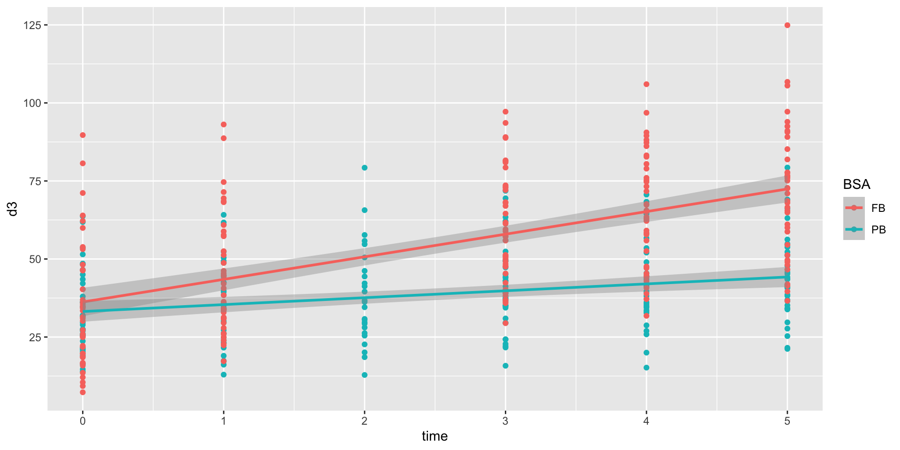

UVB radiation and vitamin D balance
Reinhold Koch
2023-12-06
Background
Vitamin D has attracted considerable attention in recent years
- humans produce vitamin D in their skin using UVB from sunlight
- values neither for minimum nor maximum (!) blood concentration of vitamin D are universally accepted
- with little UV - as in winter - natural supply seems to be too low in our latitude
Clinical study UVB -> vitamin D
interesting article 2021 in PNAS: https://www.pnas.org/doi/10.1073/pnas.2015867118
- 75 participants in London
- 5 times UVB irradiated in 3-4 days time intervals
- 5 different UVB sources
- full body or partial exposure
- what can I see when I redo the authors’ analysis?
Data
Most journals require also data to be published.
Here it is an excel spreadsheet stored on https://osf.io, freely accessible:
Download data
downloading the data into temporary file tf
- there is a legend block underneath the data block
- variable names are going to be fun!
# A tibble: 90 × 29
...1 ...2 ...3 ...4 ...5 ...6 ...7 ...8 ...9 ...10 ...11 ...12 ...13 ...14 ...15 ...16 ...17 ...18
<chr> <chr> <chr> <chr> <chr> <chr> <chr> <chr> <chr> <chr> <chr> <chr> <chr> <chr> <chr> <chr> <chr> <chr>
1 <NA> <NA> <NA> <NA> <NA> <NA> <NA> <NA> <NA> <NA> Seru… <NA> <NA> <NA> <NA> <NA> Weig… <NA>
2 <NA> <NA> <NA> <NA> <NA> <NA> <NA> <NA> <NA> <NA> <NA> <NA> <NA> <NA> <NA> <NA> <NA> <NA>
3 <NA> <NA> <NA> <NA> <NA> <NA> <NA> <NA> <NA> <NA> Seru… <NA> <NA> <NA> <NA> <NA> <NA> <NA>
4 Study na… Orig… New … Age FST Sex BSA … UVR … UV6 … Date… Base… Post… Post… Post… Post… Post… CIE … CIE …
5 ICE56 A2b 008 1 29 II F PB UV6 DDC 40963 51.4… 50.4 44.4… 49.3 53.5 53.8 211.… 341.…
# ℹ 85 more rows
# ℹ 11 more variables: ...19 <chr>, ...20 <chr>, ...21 <chr>, ...22 <chr>, ...23 <chr>, ...24 <chr>,
# ...25 <chr>, ...26 <chr>, ...27 <chr>, ...28 <chr>, ...29 <chr>Name variables
- strip off all rows that have empty first column
- Row 4 and 3 seem to describe the column
Fix variable names
blanks are bad in names, but ‘-’ and ‘(’ are even worse
names(dat0) <- vapply(X = names(dat0),
FUN = function(x) {
if (x == 'New Vol No') return('pid')
if (startsWith(x, 'CIE pre')) return('blue0nm')
if (stringr::str_count(x, ' ') == 1) {
# up to first (and only) blank
return(stringr::str_split_1(x, ' ')[1])
}
if (stringr::str_count(x, ' \\(')) {
# up to first ( and replace blanks with underscores
gsub(' ', '_', stringr::str_split_1(x, pattern = ' \\(')[[1]])
} else x
},
FUN.VALUE = 'character')Variable names
tibble [75 × 29] (S3: tbl_df/tbl/data.frame)
$ Study : chr [1:75] "ICE56 A2b" "ICE56 A2b" "ICE56 A2b" "ICE56 A2b" ...
$ Original Vol No : chr [1:75] "008" "009" "010" "011" ...
$ pid : num [1:75] 1 2 3 4 5 6 7 8 9 10 ...
$ Age : num [1:75] 29 26 32 21 29 24 26 25 23 21 ...
$ FST : chr [1:75] "II" "I" "I" "I" ...
$ Sex : chr [1:75] "F" "F" "F" "F" ...
$ BSA : chr [1:75] "PB" "PB" "PB" "PB" ...
$ UVR : chr [1:75] "UV6" "UV6" "UV6" "UV6" ...
$ UV6 : chr [1:75] "DDC" "DDC" "DDC" "DDC" ...
$ Date of 1st irrad: POSIXct[1:75], format: "2012-02-24" "2012-02-24" "2012-02-24" "2012-02-24" ...
$ Baseline : num [1:75] 51.5 61.8 32 13.9 26.9 ...
$ Post UVR 1 : num [1:75] 50.4 64.2 30.1 17.4 35.2 ...
$ Post UVR 2 : num [1:75] 44.4 79.2 30.5 20.1 42.2 ...
$ Post UVR 3 : num [1:75] 49.3 71.8 39.1 22.8 44.3 ...
$ Post UVR 4 : num [1:75] 53.5 70.6 42 28.8 44.3 ...
$ Post UVR 5 : num [1:75] 53.8 79.3 41.1 27.7 47.8 ...
$ CIE_Erythema : num [1:75] 211 211 211 211 211 ...
$ blue0nm : num [1:75] 342 342 342 342 342 ...
$ blue1nm : num [1:75] 304 304 304 304 304 ...
$ blue2nm : num [1:75] 269 269 269 269 269 ...
$ blue3nm : num [1:75] 237 237 237 237 237 ...
$ blue4nm : num [1:75] 208 208 208 208 208 ...
$ blue5nm : num [1:75] 182 182 182 182 182 ...
$ blue6nm : num [1:75] 157 157 157 157 157 ...
$ blue7nm : num [1:75] 135 135 135 135 135 ...
$ blue8nm : num [1:75] 115 115 115 115 115 ...
$ blue9nm : num [1:75] 97.8 97.8 97.8 97.8 97.8 ...
$ Bolsee : num [1:75] 65.1 65.1 65.1 65.1 65.1 ...
$ Olds : num [1:75] 149 149 149 149 149 ...Create time variable
Variables Baseline, Post UVR 1, Post UVR 2, … provide the D3 measurements at the consecutive visits. For a decent model I want an explicit time variable.
dat_ts <- dat0 |>
dplyr::select(-c('Study', 'Original Vol No', 'Date of 1st irrad')) |>
tidyr::pivot_longer(
cols = c('Baseline',
tidyselect::starts_with('Post', ignore.case=FALSE)),
values_to = 'd3',
values_drop_na = TRUE) |>
dplyr::mutate(
time = dplyr::coalesce(
as.integer(stringr::str_split_i(name, ' ', 3)), 0),
.after = UV6)Full vs partial body irradiation

Full vs partial trends
Control of similar baseline

Mixed model
Linear mixed model fit by REML ['lmerMod']
Formula: d3 ~ time + BSA:time + UVR:time + (time | pid)
Data: dat_ts
REML criterion at convergence: 2811.554
Random effects:
Groups Name Std.Dev. Corr
pid (Intercept) 16.629
time 1.983 -0.51
Residual 5.180
Number of obs: 400, groups: pid, 75
Fixed Effects:
(Intercept) time time:BSAPB time:UVRFIL2 time:UVRFIL9
34.7330 8.0092 -7.1377 1.1129 0.6351
time:UVRPUVA time:UVRUV6
-3.9687 1.7181 Quality control: residuals vs predictions
Confidence intervals of model parameters
Group Effect Variance SD SD_2.5 SD_97.5 Var_prop
pid Intercept 276.53 16.63 14.04 19.71 0.90
pid time 3.93 1.98 1.48 2.39 0.01
Residual NA 26.83 5.18 4.76 5.67 0.09
Term Value SE t P_value Lower_2.5 Upper_97.5
Intercept 34.73 1.97 17.61 0.00 30.87 38.60
time 8.01 0.48 16.70 0.00 7.07 8.95
time:BSAPB -7.14 0.82 -8.75 0.00 -8.74 -5.54
time:UVRFIL2 1.11 1.13 0.99 0.32 -1.10 3.33
time:UVRFIL9 0.64 1.13 0.56 0.57 -1.58 2.85
time:UVRPUVA -3.97 0.76 -5.24 0.00 -5.45 -2.48
time:UVRUV6 1.72 0.78 2.20 0.03 0.19 3.25D3 time courses by exposure & by radiation source
# import model prediction
# create a factor of all combinations of BSA and UVR
# replace radiation doses with cumulative dose over study
dat <- dat_ts |>
dplyr::mutate(pred1=predict(m1),
BSA_UVR=interaction(BSA,UVR, lex.order = TRUE),
across(CIE_Erythema:Olds, function(x) x*time/100))
ggplot2::ggplot(
data=dat,
aes(x=time, y=d3, color=BSA_UVR, group=BSA_UVR)) +
geom_point() + geom_path(aes(group=pid)) +
geom_path(aes(group=pid, y=pred1)) +
ggplot2::facet_wrap(~BSA_UVR) + theme(legend.position = "none")D3 time courses by exposure & by radiation source

Measurements vs predictions
Correlation of radiation profiles with predicted D3
d3 blue0nm blue1nm blue2nm blue3nm blue4nm blue5nm
d3 1.0000000 0.4131079 0.4207088 0.4289413 0.4354258 0.4402644 0.4416013
blue0nm 0.4131079 1.0000000 0.9968950 0.9870326 0.9692452 0.9431757 0.9087768
blue1nm 0.4207088 0.9968950 1.0000000 0.9965712 0.9854712 0.9660437 0.9381268
blue2nm 0.4289413 0.9870326 0.9965712 1.0000000 0.9961381 0.9840550 0.9634114
blue3nm 0.4354258 0.9692452 0.9854712 0.9961381 1.0000000 0.9958556 0.9831601
blue4nm 0.4402644 0.9431757 0.9660437 0.9840550 0.9958556 1.0000000 0.9957017
blue5nm 0.4416013 0.9087768 0.9381268 0.9634114 0.9831601 0.9957017 1.0000000
blue6nm 0.4374423 0.8667492 0.9023448 0.9346632 0.9621595 0.9829376 0.9957418
blue7nm 0.4287545 0.8189607 0.8603039 0.8991626 0.9339357 0.9625240 0.9834741
blue8nm 0.4166475 0.7679570 0.8143766 0.8590846 0.9004365 0.9361598 0.9646269
blue9nm 0.4023697 0.7165619 0.7672847 0.8170271 0.8641078 0.9061162 0.9412731
blue6nm blue7nm blue8nm blue9nm
d3 0.4374423 0.4287545 0.4166475 0.4023697
blue0nm 0.8667492 0.8189607 0.7679570 0.7165619
blue1nm 0.9023448 0.8603039 0.8143766 0.7672847
blue2nm 0.9346632 0.8991626 0.8590846 0.8170271
blue3nm 0.9621595 0.9339357 0.9004365 0.8641078
blue4nm 0.9829376 0.9625240 0.9361598 0.9061162
blue5nm 0.9957418 0.9834741 0.9646269 0.9412731
blue6nm 1.0000000 0.9959728 0.9848030 0.9683425
blue7nm 0.9959728 1.0000000 0.9964056 0.9868094
blue8nm 0.9848030 0.9964056 1.0000000 0.9969735
blue9nm 0.9683425 0.9868094 0.9969735 1.0000000cumulative irradiation dose instead of time
(m2 <- lme4::lmer(d3 ~ blue5nm + BSA:blue5nm + UVR:blue5nm + (blue5nm|pid),
data = dat,
control=lmerControl(optimizer = 'Nelder_Mead')))Linear mixed model fit by REML ['lmerMod']
Formula: d3 ~ blue5nm + BSA:blue5nm + UVR:blue5nm + (blue5nm | pid)
Data: dat
REML criterion at convergence: 2817.294
Random effects:
Groups Name Std.Dev. Corr
pid (Intercept) 16.48
blue5nm 1.42 -0.53
Residual 5.27
Number of obs: 400, groups: pid, 75
Fixed Effects:
(Intercept) blue5nm blue5nm:BSAPB blue5nm:UVRFIL2
34.7326 5.3637 -4.1213 0.1152
blue5nm:UVRFIL9 blue5nm:UVRPUVA blue5nm:UVRUV6
0.5710 1.3815 0.2030 Quality control: residuals vs predictions
Confidence intervals of model 2 parameters
Group Effect Variance SD SD_2.5 SD_97.5 Var_prop
pid Intercept 271.74 16.48 13.91 19.54 0.90
pid blue5nm 2.02 1.42 1.03 1.75 0.01
Residual NA 27.77 5.27 4.84 5.77 0.09
Term Value SE t P_value Lower_2.5 Upper_97.5
Intercept 34.73 1.96 17.74 0.00 30.89 38.57
blue5nm 5.36 0.34 16.01 0.00 4.71 6.02
blue5nm:BSAPB -4.12 0.55 -7.56 0.00 -5.19 -3.05
blue5nm:UVRFIL2 0.12 0.77 0.15 0.88 -1.40 1.63
blue5nm:UVRFIL9 0.57 0.86 0.66 0.51 -1.12 2.27
blue5nm:UVRPUVA 1.38 0.76 1.81 0.07 -0.11 2.87
blue5nm:UVRUV6 0.20 0.53 0.38 0.70 -0.84 1.24- That means the source of UVB radiation, UVR, is not significant here!
simplest(?) model
(m3 <- lme4::lmer(d3 ~ blue5nm + BSA:blue5nm + (blue5nm|pid),
data = dat,
control=lmerControl(optimizer = 'Nelder_Mead')))Linear mixed model fit by REML ['lmerMod']
Formula: d3 ~ blue5nm + BSA:blue5nm + (blue5nm | pid)
Data: dat
REML criterion at convergence: 2824.432
Random effects:
Groups Name Std.Dev. Corr
pid (Intercept) 16.494
blue5nm 1.401 -0.54
Residual 5.283
Number of obs: 400, groups: pid, 75
Fixed Effects:
(Intercept) blue5nm blue5nm:BSAPB
34.902 5.582 -4.109 Quality control: residuals vs predictions
Confidence intervals of model 3 parameters
Group Effect Variance SD SD_2.5 SD_97.5 Var_prop
pid Intercept 272.06 16.49 13.92 19.55 0.90
pid blue5nm 1.96 1.40 1.04 1.77 0.01
Residual NA 27.91 5.28 4.85 5.79 0.09
Term Value SE t P_value Lower_2.5 Upper_97.5
Intercept 34.90 1.96 17.83 0.00 31.07 38.74
blue5nm 5.58 0.26 21.59 0.00 5.07 6.09
blue5nm:BSAPB -4.11 0.34 -12.11 0.00 -4.77 -3.44Measurements vs final predictions

comparison of prediction quality

Basel Data Science